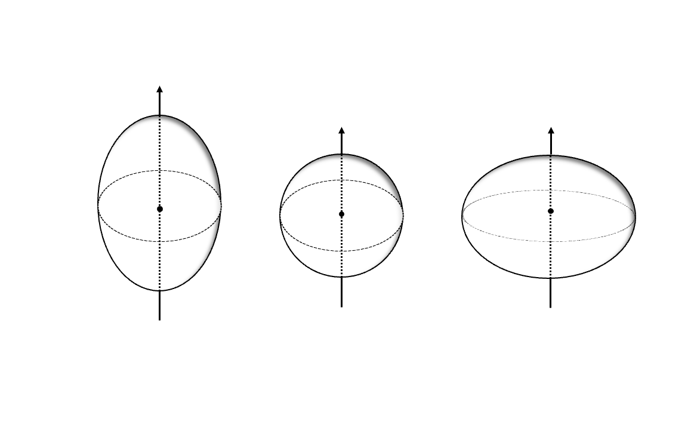
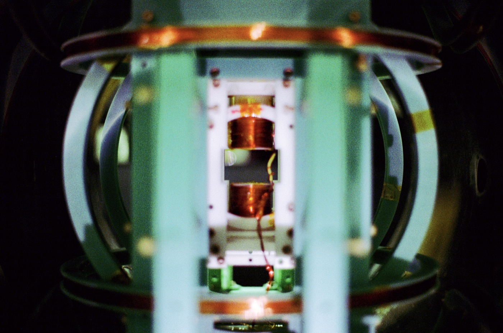
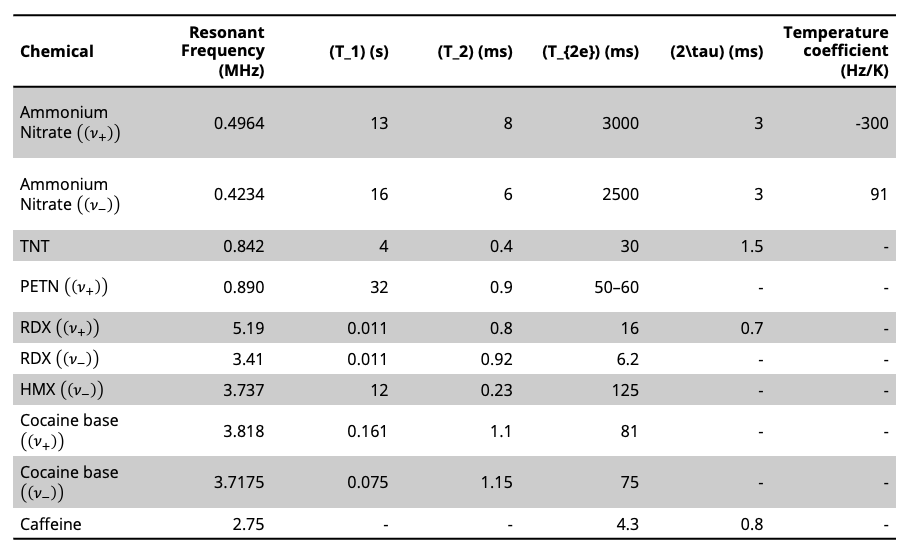
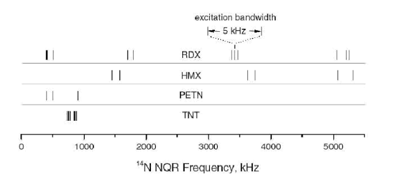
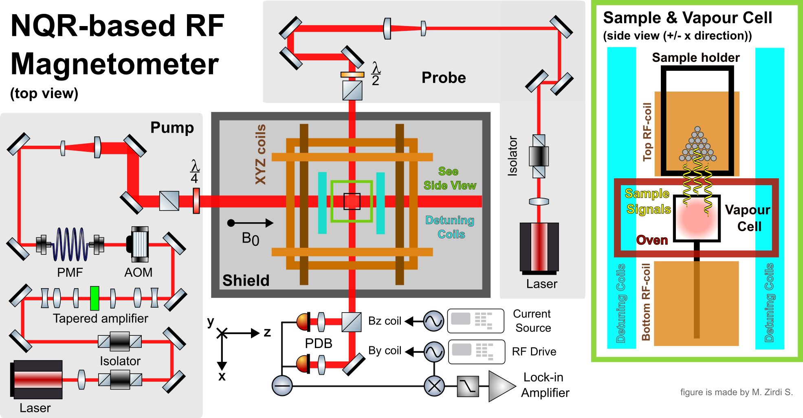
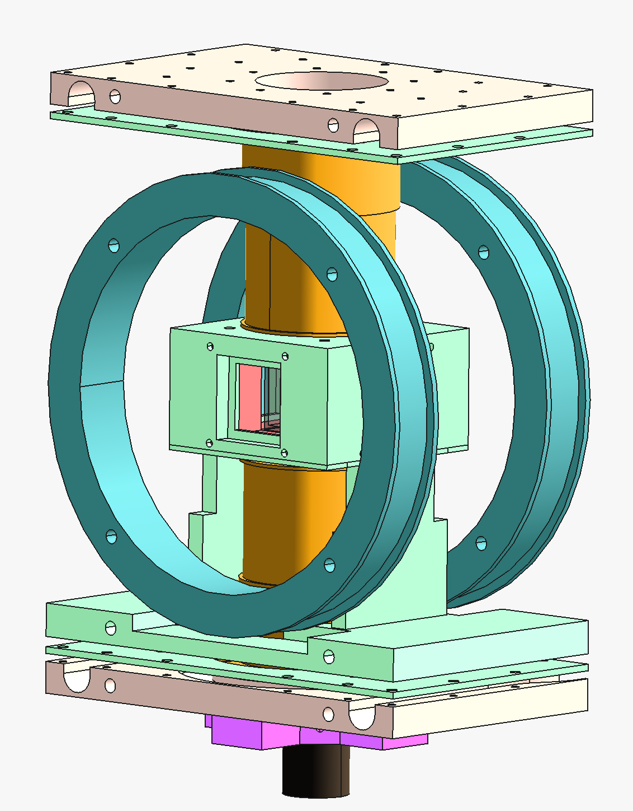
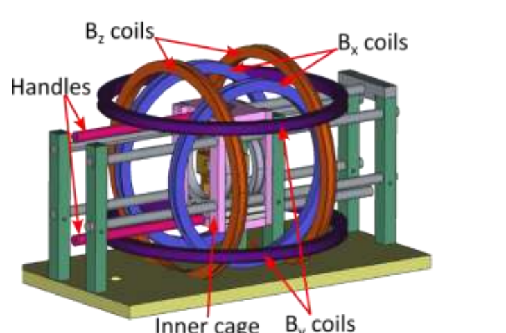
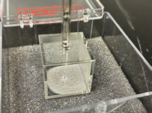
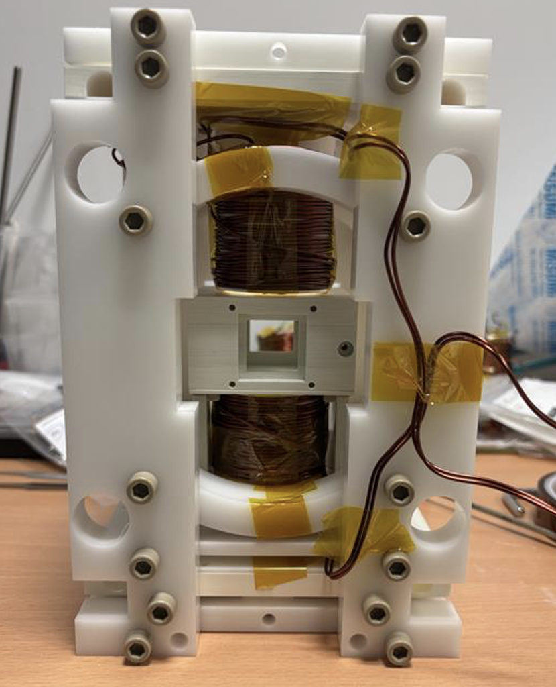

Radio-frequency sensing · NQR
NQR-based RF Magnetometer
Designing an atomic radio-frequency magnetometer for nuclear quadrupole resonance detection.
Project Abstract
At A*STAR Q.InC, I contributed to the first half of a project to build a prototype NQR-based radio-frequency magnetometer for detecting unexploded ordnance and specific crystalline narcotics. By the time I left the project, we had completed the literature review, designed the experimental setup, and assembled it for initial testing.
The sensor is closely related to the QEP 2.0 Atomic Magnetometer, with upgrades to the optics and vapour-cell geometry for RF operation. These include RF and detuning coils, modular sample mounts, and pump-power amplification.
Background And Motivation
Nuclear Quadrupole Resonance (NQR) is a technique in which certain nuclei within molecules have energy levels that split because their quadrupole moments interact with the electric-field gradients created by their local chemical environment. Radio-frequency transitions between these levels have characteristic frequencies that depend on the local chemical bonds and crystal structure.
Experimentally, we can drive and then probe these transitions by applying a radio-frequency magnetic field to the sample. This excites the nuclear spins and induces an oscillating nuclear magnetization. Through careful engineering, we propose to use an atomic magnetometer to measure this magnetization instead of a conventional RF receiver coil, with the aim of improving sensitivity.
We focus on NQR spectroscopy of nitrogen-14 nuclei, which are found in many explosives and crystalline narcotics. Potential applications include portable or installed screening near import facilities, immigration checkpoints, and other sites requiring stringent national security.


Results And Next Steps
When I left the project to pursue my MSc, the literature review was complete and the experimental setup had been designed and assembled for initial testing. Testing the sensor and RF excitation sequence with reference samples was the next step.
The design review set a sensitivity target below 2 fT/√Hz. Simulations predicted an optimum below 1 fT/√Hz and estimated that a signal-to-noise ratio of 3 could be reached from about 70 g of ammonium nitrate in less than 20 seconds. The first functional test would be to detect ammonium nitrate, then progressively test compounds with higher NQR resonance frequencies.


Vapour Cell, Oven, Magnetic Coils, Cooling, And Modularity
The experiment required custom mechanical supports for its critical components; their functions are described in the Methodology section. We designed and assembled the setup, including the magnetic-coil wiring, a thermally isolating oven, the 20 × 20 × 20 mm potassium vapour cell, and a ceramic RF-coil assembly with a mount designed for active water cooling. The sample holder and surrounding structure were designed to make changing chemical samples straightforward. See the images at the end for 3D renders of the experimental setup.
Pump Optics And Tapered Amplifier
The pump system is more powerful and uses a larger beam than the QEP 2.0 magnetometer. A tapered amplifier boosts the seed laser to approximately 121 mW, with the beam expanded and shaped to illuminate the vapour cell diffusely and relatively uniformly. Other optics set the beam size at the cell, improve coupling into and out of the amplifier, and provide an additional isolator to reduce back reflections.
Electronics
We developed custom electronics for the experiment. I designed an interlock system that monitors pump-laser power and shuts down the amplifier if the seed laser is absent. We also measured the RF coils' inductance in situ to inform the matching network design, reduce unintended parasitic capacitance, and support efficient resonance matching. This matching is important for reaching the higher resonance frequencies of some target compounds, several of which have few or no demonstrated detections in the literature.
Methodology

Sample Excitation And Atomic Sensing
Sample holder and RF coils: the modular holder positions the sample next to the potassium vapour cell. The top RF coil applies the radio-frequency field that excites the sample's NQR transition. The bottom RF coil is wound in the opposite sense, so the fields from the two coils cancel at the vapour sensor. This reduces direct RF pickup while the sample's oscillating nuclear magnetisation produces the signal measured by the atomic sensor.
Vapour cell, oven, and cooling: the 2 cm cubic cell contains potassium vapour, with nitrogen and helium buffer gases. The oven controls the cell temperature and potassium density; the cooling assembly helps manage heat around the RF coils and sample region.
Detuning coils: these coils shift the atomic resonance during the strong sample-excitation pulse, helping protect the potassium spin polarisation from the pulse.
Pump Laser And Optical Readout
Tapered amplifier: it boosts the pump-laser power so the expanded beam can illuminate the large vapour cell with sufficient, relatively uniform optical power. The acousto-optic modulator (AOM) provides fast control of the pump beam, allowing it to be switched or modulated in sync with the measurement sequence.
Field Control And Readout
XYZ coils: arranged in Helmholtz geometry, these coils provide the static tuning field B0 that brings the atomic Larmor frequency into resonance with the NQR signal. They also compensate residual static magnetic fields. The separate RF-drive coil supplies a smaller oscillating field for characterising or driving the sensor response.
The pump and probe optics, balanced photodetector, and lock-in readout follow the same general arrangement as the QEP 2.0 Atomic Magnetometer. Here, the probe rotation carries the response to the sample's oscillating nuclear magnetisation. The RF amplifier and matching network drive the sample excitation coils, while the function generator and data-acquisition system coordinate the excitation and measurement timing.
Citations
S.-K. Lee, K. L. Sauer, S. J. Seltzer, O. Alem, and M. V. Romalis, “Subfemtotesla radio-frequency atomic magnetometer for detection of nuclear quadrupole resonance,” Applied Physics Letters, vol. 89, 214106 (2006).
A. N. Garroway, M. L. Buess, J. P. Yesinowski, and J. B. Miller, “Narcotics and explosives detection by 14N pure NQR,” SPIE Substance Detection Systems, vol. 2092, p. 318 (1993).
Optics And Engineering
Selected apparatus images showing the coil assembly and experimental hardware.



